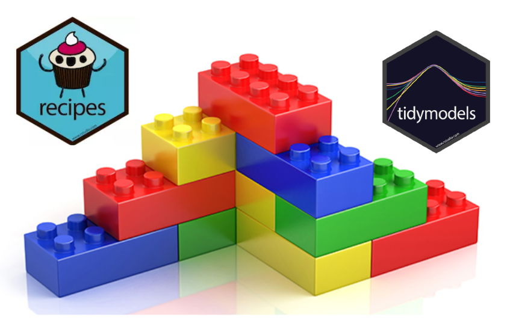
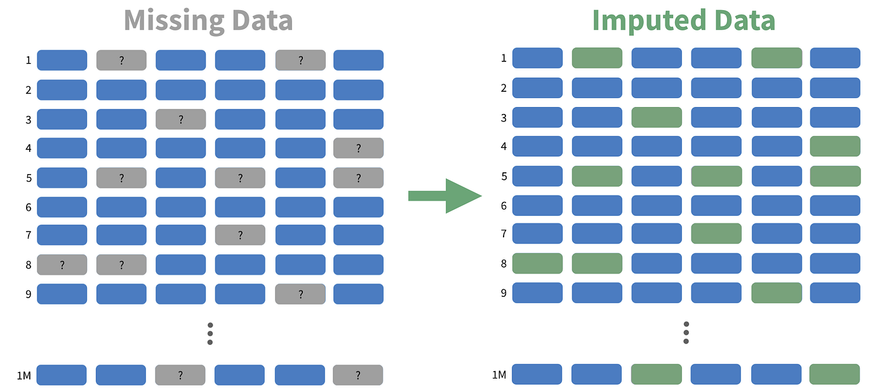
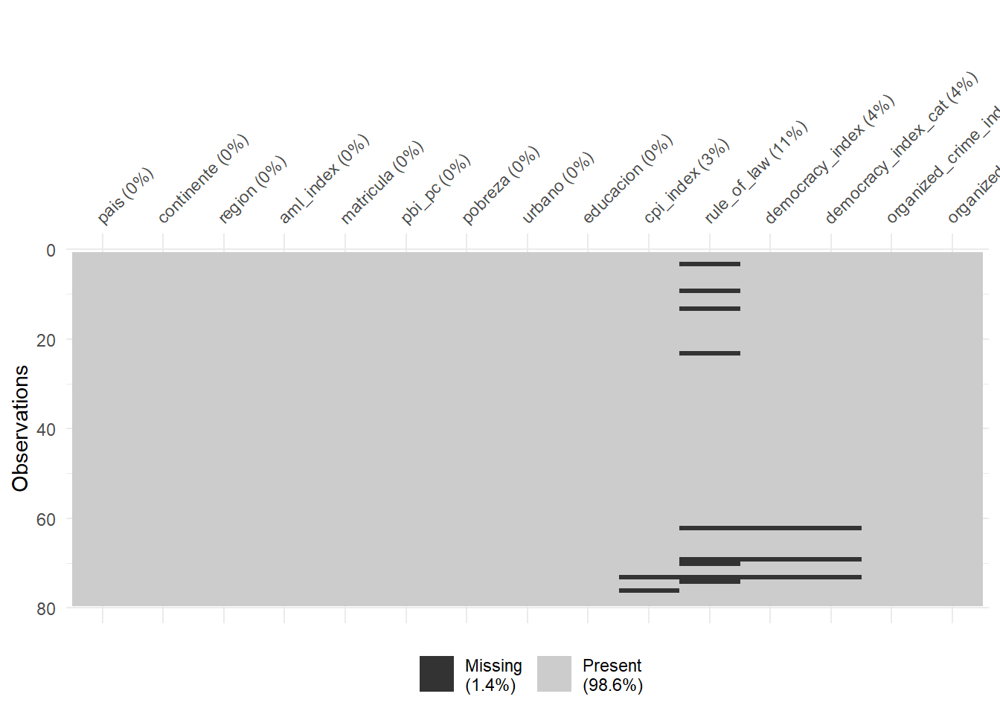
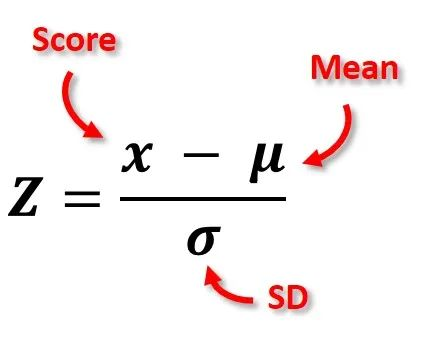
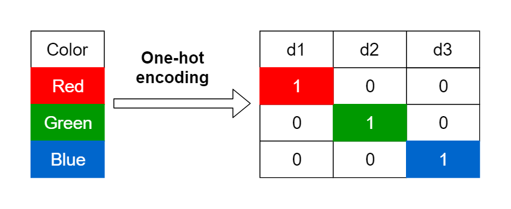
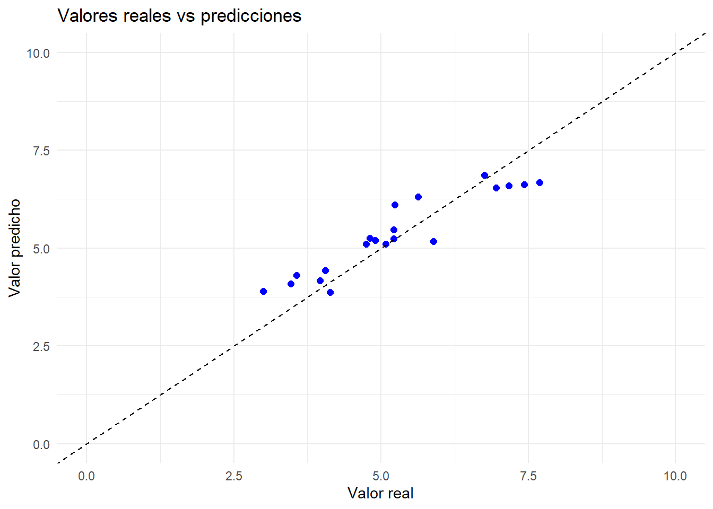
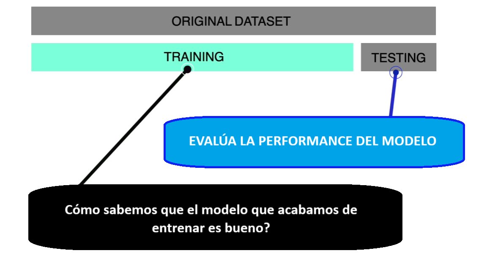
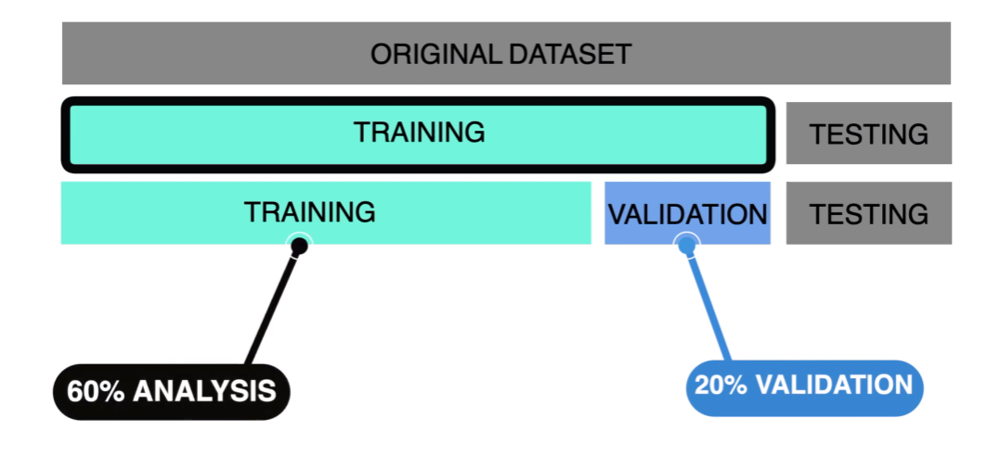
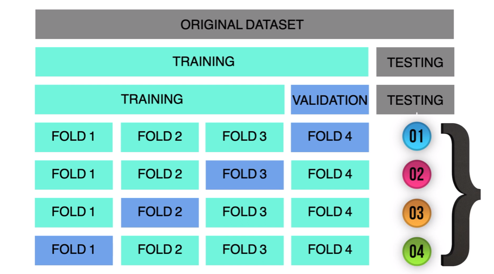

library(tidyverse)
library(readxl)
library(tidymodels)
data <- read_xlsx("data/AML_2.xlsx")
data<- data |>
filter(!is.na(aml_index))8 Preprocesamiento y validación cruzada
8.1 Punto de partida
Habíamos establecido en la clase anterior que queríamos utilizar nuestra data para construir buenos modelos predictivos SUPERVISADOS y para eso utilizamos la regresión lineal.
\[ y = \beta_0 + \beta_1x_1 + \beta_2x_2 + \beta_ix_i \]
También, acuérdate que utilizamos una función de costo principalmente para evaluar la predicción, la cual era el RMSE (raíz del error cuadrático medio):
\[ J(\beta) \;=\; \sqrt{\frac{1}{n}\sum_{i=1}^{n}\big(y_i - \hat{y}_i\big)^2} \]
Asimismo, lo que hicimos en el ejercicio fue construir modelos con el nivel de pobreza (pobreza) y el PBI per cápita (pbi_pc)
Vamos a expandir nuestro uso de tidymodels.
8.2 Preprocesamiento con recipe

Con recipe no solo definimos la variable objetivo y los predictores; también podemos encadenar, de forma ordenada y reproducible, los pasos de preprocesamiento que aplicaremos al conjunto de datos (imputación, codificación, escalado, etc.).
Vamos a revisar los más recurrente.
8.2.1 step_impute_mean(): Imputación de NA

Utilizamos nuestra base de datos:
Imagina que ahora deseo utilizar rule_of_law como un predictor pero me doy cuenta que tiene valores perdidos.
summary(data$rule_of_law) Min. 1st Qu. Median Mean 3rd Qu. Max. NA's
0.3458 0.4432 0.5147 0.5549 0.6647 0.8995 9 Hay que identificar si es que efectivamente es posible imputar:
library(naniar)
data |>
vis_miss()
Nota
La imputación de datos perdidos es el proceso de reemplazar valores faltantes (NA) por valores plausibles para poder analizar y modelar sin descartar observaciones. Busca preservar el tamaño muestral, reducir sesgos y permitir que los algoritmos funcionen (muchos no aceptan NA).
Guíate con estos criterios. Nos importa analizar por variable.
Porcentaje BAJO (<5%):Puedes eliminar esas filas sin perder mucha información o imputar.
Porcentaje MEDIO (5-20%): Conviene imputar.
Porcentaje ALTO (>30%): Esa variable podría ser candidata a eliminarse, salvo que tenga relevancia en el análisis.
La imputación debe aplicarse siempre, SIEMPRE, sobre la data de entrenamiento.
set.seed(2025)
index <- initial_split(data)
training_data <- training(index)
testing_data <- testing(index) Entonces:
mi_receta <- recipe(aml_index ~ rule_of_law, data = training_data) |>
step_impute_mean(rule_of_law)¿Qué es lo que está haciendo esta función? step_impute_mean() imputa los valores faltantes de variables numéricas con la media calculada en el conjunto de entrenamiento. Es decir, con este paso, nos va a permitir utilizar TODOS LOS CASOS, los cual al inicio tenía perdidos. Este es uno de los métodos de imputación más simples.
Ahora bien, antes de seguir, si quieres ver qué hace este step a nuestra data, podemos inspeccionarlo preparando la receta solo con el conjunto de entrenamiento (ahí la receta “aprende” parámetros como las medias) y luego mirar el entrenamiento ya transformado con juice() y el conjunto de prueba horneado con bake().
En la jerga de tidymodels, hornear significa aplicar a datos nuevos (p. ej., el test) exactamente las mismas transformaciones que se estimaron con el train —imputar con las medias del train, escalar con sus desvíos, crear las mismas dummies, etc.— sin recalcular nada y sin modificar tu objeto original; bake() simplemente devuelve un tibble ya transformado, listo para predecir.
Esto aplica tanto en nuestro training data:
training_data |>
select(rule_of_law)# A tibble: 59 × 1
rule_of_law
<dbl>
1 NA
2 0.703
3 0.534
4 0.834
5 0.569
6 NA
7 0.630
8 0.556
9 0.800
10 0.549
# ℹ 49 more rowsQue ahora se vería así:
mi_receta |>
prep() |> # es cuando la receta aprende con el train
juice() # devuelve el train ya transformado según lo aprendido en prep# A tibble: 59 × 2
rule_of_law aml_index
<dbl> <dbl>
1 0.557 8.14
2 0.703 4.3
3 0.534 4.71
4 0.834 4.29
5 0.569 5.85
6 0.557 4.7
7 0.630 4.9
8 0.556 5.16
9 0.800 4.1
10 0.549 5.29
# ℹ 49 more rowsComo en nuestro testing data, que antes se veía así:
testing_data |>
select(rule_of_law)# A tibble: 20 × 1
rule_of_law
<dbl>
1 0.484
2 0.784
3 NA
4 0.354
5 0.488
6 0.817
7 0.413
8 0.548
9 0.437
10 0.768
11 0.430
12 0.522
13 0.417
14 0.486
15 NA
16 0.688
17 0.721
18 NA
19 0.454
20 0.485Pero luego de aplicar la receta vamos a ver:
mi_receta |>
prep() |> # es cuando la receta aprende con el train
bake(new_data=testing_data) # devuelve el test ya transformado según lo aprendido en prep# A tibble: 20 × 2
rule_of_law aml_index
<dbl> <dbl>
1 0.484 4.75
2 0.784 4.13
3 0.557 5.89
4 0.354 6.75
5 0.488 5.21
6 0.817 3
7 0.413 7.69
8 0.548 4.9
9 0.437 7.17
10 0.768 3.47
11 0.430 7.43
12 0.522 5.63
13 0.417 5.21
14 0.486 4.81
15 0.557 5.23
16 0.688 3.57
17 0.721 3.96
18 0.557 4.05
19 0.454 6.95
20 0.485 5.088.2.2 step_normalize(): Normalizar variables
Definición
Estandariza variables numéricas mediante z-score: a cada columna seleccionada le resta su media y la divide por su desviación estándar.

Cuándo usarlo:
Modelos sensibles a la escala o basados en distancia: k-NN, SVM, regresiones penalizadas (glmnet: Lasso/Ridge/Elastic Net), redes neuronales.
No es necesario para árboles, random forest o boosting basados en árboles.
Recuerda que debes hacer esto a las variables numéricas.
Después de normalizar verás:
Los números cambian de escala: cada predictor numérico queda con media ≈ 0 y desviación estándar ≈ 1. Verás muchos valores negativos (por debajo del promedio) y positivos (por encima).
Las unidades desaparecen: ya no están en soles, años o %; ahora todos están en “desviaciones estándar”, por eso son comparables entre sí.
Las formas no se rompen: el orden de los casos no cambia y las correlaciones entre variables se conservan; solo cambia la escala.
En tablas/gráficos: histogramas centrados en 0; resúmenes tipo mean ~ 0 y sd ~ 1. Si haces scatterplots, la nube luce igual, pero con ejes reescalados.
En el modelo: algoritmos sensibles a escala (k-NN, SVM, Lasso/Ridge/Elastic Net, PCA, k-means) se vuelven más estables y los coeficientes en modelos lineales son más comparables en magnitud.
Ejemplo simple
Veamos lo que hacemos con un ejemplo:
df2 <- tibble(
edad = c(22, 25, 28, 30, 34, 37, 41, 45, 52, 58),
sueldo = c(1200, 1350, 1500, 1650, 2100, 2400, 3000, 3500, 4200, 5000)
)Normalizar implica:
df2 <- df2 |>
mutate(edad_normalizado=(edad-mean(edad))/sd(edad),
sueldo_normalizado=(sueldo-mean(sueldo))/sd(sueldo))
df2# A tibble: 10 × 4
edad sueldo edad_normalizado sueldo_normalizado
<dbl> <dbl> <dbl> <dbl>
1 22 1200 -1.29 -1.07
2 25 1350 -1.03 -0.954
3 28 1500 -0.780 -0.838
4 30 1650 -0.610 -0.723
5 34 2100 -0.271 -0.377
6 37 2400 -0.0169 -0.146
7 41 3000 0.322 0.315
8 45 3500 0.661 0.700
9 52 4200 1.25 1.24
10 58 5000 1.76 1.85 Entonces, ahora la escala cambia y son comparables:
summary(df2$edad_normalizado) Min. 1st Qu. Median Mean 3rd Qu. Max.
-1.2879 -0.7372 -0.1440 0.0000 0.5762 1.7624 summary(df2$sueldo_normalizado) Min. 1st Qu. Median Mean 3rd Qu. Max.
-1.0691 -0.8095 -0.2615 0.0000 0.6038 1.8536 Aplicación con tidymodels
Esto que hemos hecho manualmente, también lo podemos hacer con tidymodels y la función step_normalize(). Piensa en las variables rule_of_law y cpi_index.
mi_receta <- recipe(aml_index ~ rule_of_law + pbi_pc, data = training_data) |>
step_impute_mean(rule_of_law) |>
step_normalize(pbi_pc)Vemos nuestro dataset de entrenamiento:
mi_receta |>
prep() |> # es cuando la receta aprende con el train
juice() # devuelve el train ya transformado según lo aprendido en prep# A tibble: 59 × 3
rule_of_law pbi_pc aml_index
<dbl> <dbl> <dbl>
1 0.557 -0.746 8.14
2 0.703 2.95 4.3
3 0.534 -0.208 4.71
4 0.834 2.04 4.29
5 0.569 -0.411 5.85
6 0.557 -0.417 4.7
7 0.630 -0.0594 4.9
8 0.556 -0.231 5.16
9 0.800 2.26 4.1
10 0.549 -0.659 5.29
# ℹ 49 more rowsY nuestor dataset de test:
mi_receta |>
prep() |> # es cuando la receta aprende con el train
bake(new_data=testing_data) # devuelve el test ya transformado según lo aprendido en prep# A tibble: 20 × 3
rule_of_law pbi_pc aml_index
<dbl> <dbl> <dbl>
1 0.484 -0.479 4.75
2 0.784 2.02 4.13
3 0.557 -0.580 5.89
4 0.354 -0.699 6.75
5 0.488 -0.335 5.21
6 0.817 0.593 3
7 0.413 -0.734 7.69
8 0.548 -0.538 4.9
9 0.437 -0.764 7.17
10 0.768 0.345 3.47
11 0.430 -0.758 7.43
12 0.522 -0.766 5.63
13 0.417 -0.213 5.21
14 0.486 -0.377 4.81
15 0.557 0.184 5.23
16 0.688 0.757 3.57
17 0.721 1.02 3.96
18 0.557 4.13 4.05
19 0.454 -0.751 6.95
20 0.485 -0.614 5.088.2.3 step_dummy(): Predictoras categóricas
Definición
Para usar variables categóricas en muchos algoritmos de aprendizaje (por ejemplo, regresiones penalizadas como glmnet, SVM, redes, XGBoost), primero hay que convertirlas a variables numéricas. La forma estándar es el one-hot encoding: cada categoría de una variable se transforma en una columna binaria que vale 1 si el registro pertenece a esa categoría y 0 si no.

Por ejemplo, si color tiene valores (rojo, azul, verde), se crean columnas como color_rojo, color_azul y color_verde. Esto permite que el modelo “entienda” información categórica sin asignar números arbitrarios que introducirían un orden falso.
Ejemplo simple
Hagamos un ejemplo básico:
df <- tibble(
id = 1:5,
edad = c(15,21,30,57,62),
sector = c("publico", "privado", "publico", "privado", "privado"))
df# A tibble: 5 × 3
id edad sector
<int> <dbl> <chr>
1 1 15 publico
2 2 21 privado
3 3 30 publico
4 4 57 privado
5 5 62 privadoConvertir a dummy, significa que vamos a:
df |>
mutate(sector_public=ifelse(sector=="publico", 1, 0),
sector_privado=ifelse(sector=="privado", 1, 0))# A tibble: 5 × 5
id edad sector sector_public sector_privado
<int> <dbl> <chr> <dbl> <dbl>
1 1 15 publico 1 0
2 2 21 privado 0 1
3 3 30 publico 1 0
4 4 57 privado 0 1
5 5 62 privado 0 1Como ves en este ejemplo, a la derecha hemos creado dos nuevas variables “sector_publico” que coloca un “1” cuando efectivamente el caso pertenece a ese sector y “sector_privado” cuando ocurre lo propio. En caso no se cumpla la condición, existirá un cero.
Aplicación con tidymodels
Ahora bien, podemos hacer esta transformación de una forma más sencilla utilizando recipes.
mi_receta <- recipe(aml_index ~ rule_of_law + pbi_pc + continente, data = training_data) |>
step_impute_mean(rule_of_law) |>
step_normalize(pbi_pc, rule_of_law) |>
step_dummy(continente)Ahora vemos cómo se vería nuestra data de entrenamiento.
mi_receta |>
prep() |> # es cuando la receta aprende con el train
juice()# A tibble: 59 × 7
rule_of_law pbi_pc aml_index continente_Americas continente_Asia
<dbl> <dbl> <dbl> <dbl> <dbl>
1 0 -0.746 8.14 0 0
2 1.10 2.95 4.3 1 0
3 -0.179 -0.208 4.71 0 1
4 2.08 2.04 4.29 0 0
5 0.0895 -0.411 5.85 0 0
6 0 -0.417 4.7 0 0
7 0.549 -0.0594 4.9 0 0
8 -0.00893 -0.231 5.16 0 0
9 1.82 2.26 4.1 0 0
10 -0.0636 -0.659 5.29 0 0
# ℹ 49 more rows
# ℹ 2 more variables: continente_Europe <dbl>, continente_Oceania <dbl>Y nuestra data de testing:
mi_receta |>
prep() |> # es cuando la receta aprende con el train
bake(new_data=testing_data) # devuelve el test ya transformado según lo aprendido en prep# A tibble: 20 × 7
rule_of_law pbi_pc aml_index continente_Americas continente_Asia
<dbl> <dbl> <dbl> <dbl> <dbl>
1 -0.551 -0.479 4.75 0 0
2 1.70 2.02 4.13 0 0
3 0 -0.580 5.89 0 1
4 -1.53 -0.699 6.75 0 0
5 -0.522 -0.335 5.21 1 0
6 1.95 0.593 3 0 0
7 -1.09 -0.734 7.69 0 0
8 -0.0721 -0.538 4.9 0 1
9 -0.904 -0.764 7.17 0 0
10 1.58 0.345 3.47 0 0
11 -0.959 -0.758 7.43 0 0
12 -0.268 -0.766 5.63 0 0
13 -1.05 -0.213 5.21 1 0
14 -0.535 -0.377 4.81 1 0
15 0 0.184 5.23 0 0
16 0.979 0.757 3.57 0 0
17 1.23 1.02 3.96 0 0
18 0 4.13 4.05 0 0
19 -0.779 -0.751 6.95 0 0
20 -0.542 -0.614 5.08 0 0
# ℹ 2 more variables: continente_Europe <dbl>, continente_Oceania <dbl>8.3 Regresión lineal con receta
8.3.1 Probando la nueva receta
Recapitulamos la receta que tenemos con preprocesamiento:
mi_receta── Recipe ──────────────────────────────────────────────────────────────────────── Inputs Number of variables by roleoutcome: 1
predictor: 3── Operations • Mean imputation for: rule_of_law• Centering and scaling for: pbi_pc rule_of_law• Dummy variables from: continenteGeneramos nuestro modelo:
mi_modelo_lm <- linear_reg() |>
set_engine("lm")
flujo_ml<-workflow() |>
add_recipe(mi_receta) |>
add_model(mi_modelo_lm)
modelo_entrenado <- flujo_ml %>%
fit(data = training_data) # Con el de ENTRENAMIENTO!Si deseamos ver los coeficientes (estimates) del modelo podemos solicitarlo con tidy():
tidy(modelo_entrenado)# A tibble: 7 × 5
term estimate std.error statistic p.value
<chr> <dbl> <dbl> <dbl> <dbl>
1 (Intercept) 6.12 0.172 35.7 3.20e-38
2 rule_of_law -0.441 0.154 -2.87 5.88e- 3
3 pbi_pc -0.0921 0.159 -0.580 5.65e- 1
4 continente_Americas -1.14 0.242 -4.70 1.95e- 5
5 continente_Asia -1.00 0.235 -4.26 8.58e- 5
6 continente_Europe -1.31 0.274 -4.79 1.45e- 5
7 continente_Oceania -0.600 0.460 -1.30 1.98e- 1Qué puedes notar en los coeficientes?
8.3.2 Evaluamos el modelo con test
Una vez que el modelo ha sido entrenado, el siguiente paso es evaluar su desempeño. La evaluación consiste en medir qué tan bien el modelo logra predecir los valores de la variable de interés, comparando las predicciones con los valores reales. Para ello se utilizan métricas de error, como el RMSE (Root Mean Squared Error), que nos permiten cuantificar la calidad del ajuste y, sobre todo, estimar su capacidad de generalización cuando se aplica a nuevos datos.
Para ello, primero utilizamos el modelo generado para predecir con la nueva data:
prediccion_test<-modelo_entrenado |>
predict(testing_data) |>
bind_cols(valor_real=testing_data$aml_index)
prediccion_test# A tibble: 20 × 2
.pred valor_real
<dbl> <dbl>
1 5.10 4.75
2 3.87 4.13
3 5.18 5.89
4 6.86 6.75
5 5.24 5.21
6 3.90 3
7 6.67 7.69
8 5.20 4.9
9 6.59 7.17
10 4.08 3.47
11 6.62 7.43
12 6.31 5.63
13 5.47 5.21
14 5.25 4.81
15 6.11 5.23
16 4.31 3.57
17 4.17 3.96
18 4.43 4.05
19 6.54 6.95
20 5.11 5.08Ahora vamos a medir cómo funciona nuestro modelo utilizándolo con data de testeo. Recuerda que en nuestra data de testeo podemos validar en contraste con el valor real.
yardstick::rmse(prediccion_test,
truth = valor_real,
estimate = .pred)# A tibble: 1 × 3
.metric .estimator .estimate
<chr> <chr> <dbl>
1 rmse standard 0.567El R cuadrado es otra medida, aunque menos utilizada en machine learning, que dice cuánto es explicado por nuestro modelo.
rsq(prediccion_test,
truth = valor_real,
estimate = .pred)# A tibble: 1 × 3
.metric .estimator .estimate
<chr> <chr> <dbl>
1 rsq standard 0.867Graficamos:
prediccion_test |>
ggplot()+
aes(x = valor_real, y = .pred)+
geom_point(color = "blue", size = 2) +
geom_abline(slope = 1, intercept = 0, linetype = "dashed") + # línea 1:1
labs(
x = "Valor real",
y = "Valor predicho",
title = "Valores reales vs predicciones"
) +
xlim(0,10)+ ylim(0,10)+
theme_minimal()
8.4 Remuestreo para evaluar el rendimiento: cross-validation
Hasta aquí te había comentado que era necesario separar nuestra data en data de entrenamiento (train) y data de evaluación (test).

Sin embargo, el depender de un único split (partición) es un riesgo para nosotros. Si te pones a pensar es como evaluar a un deportista con una sóla carrera. En otras palabras, la “nota” del modelo queda a merced del azar del muestreo. Por eso, se establece que antes de irnos a evaluar al modelo con el testing dataset debe pasar por un proceso de validación.
Este proceso de validación requeriría hacer un split adicional. Normalmente, en un escenario óptimo, vamos a tener la suficiente cantidad de información para crear una partición más.

Sin embargo, lo que usualmente ocurre es que no se cuenta con la suficiente cantidad de información. Esto nos deja una salida: usar una técnica que se llama cross-validation o validación cruzada.

La idea detrás del remuestreo es usar tu muestra disponible como si fuera el universo para simular muchos “nuevos” conjuntos de datos y así estimar con mayor fiabilidad cómo rendiría un modelo o un estimador fuera de esa muestra. En vez de depender de un único corte train/test (muy sensible al azar), divides o vuelves a muestrear tus datos muchas veces, entrenas y evalúas repetidamente, y promedias los resultados.
Primero debemos crear nuestras particiones utilizando nuestro training data. En este caso vamos a comenzar utilizando sólo cuatro particiones o folds.
set.seed(2025)
folds <- vfold_cv(training_data, v= 4)Si entramos a nuestro primer fold, vemos que hemos divido la data de entrenamiento (59) en dos partes. Una primera que fungirá como data para analizar nuestro modelo (aquí para evitar la confusión con el término entrenamiento, se utiliza la palabra analysis) y un fold de 15 casos para el assess.
folds$splits[[1]]<Analysis/Assess/Total>
<44/15/59>Para correr nuevamente nuestro modelo utilizando cross-validation necesitamos seguir los mismos pasos del workflow, pero utilizando el fit en las nuevas particiones:
mi_modelo_lm <- linear_reg() |>
set_engine("lm")
flujo_ml<-workflow() |>
add_recipe(mi_receta) |>
add_model(mi_modelo_lm)
modelos_entrenados_cv <- flujo_ml %>%
fit_resamples(resamples = folds) #DIFERENTE→ A | warning: ! There are new levels in `continente`: "Oceania".
ℹ Consider using step_novel() (`?recipes::step_novel()`) before `step_dummy()`
to handle unseen values.There were issues with some computations A: x1
There were issues with some computations A: x1Ahora, podemos solicitar las métricas para cada uno de los folds creado:
modelos_entrenados_cv |>
collect_metrics(summarize = FALSE)# A tibble: 8 × 5
id .metric .estimator .estimate .config
<chr> <chr> <chr> <dbl> <chr>
1 Fold1 rmse standard 0.682 Preprocessor1_Model1
2 Fold1 rsq standard 0.756 Preprocessor1_Model1
3 Fold2 rmse standard 0.430 Preprocessor1_Model1
4 Fold2 rsq standard 0.811 Preprocessor1_Model1
5 Fold3 rmse standard 0.656 Preprocessor1_Model1
6 Fold3 rsq standard 0.803 Preprocessor1_Model1
7 Fold4 rmse standard 0.637 Preprocessor1_Model1
8 Fold4 rsq standard 0.589 Preprocessor1_Model1Finalmente, solicitamos el promedio:
modelos_entrenados_cv |>
collect_metrics()# A tibble: 2 × 6
.metric .estimator mean n std_err .config
<chr> <chr> <dbl> <int> <dbl> <chr>
1 rmse standard 0.601 4 0.0577 Preprocessor1_Model1
2 rsq standard 0.740 4 0.0518 Preprocessor1_Model1Este fit_samples se recomienda hacerlo antes del fit con la data de testeo. De tal forma que antes de la evaluación, ya sabes que tu modelo puede funcionar con distintos subdataset creados a partir de tu data de entrenamiento original.